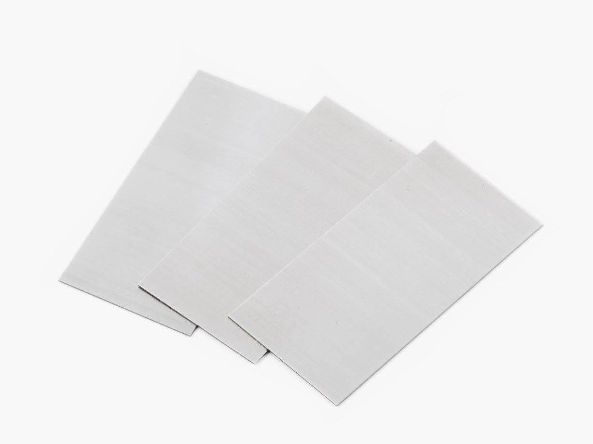

Card Scrapers
Equipment Inventory

Manufacturer:
Lee Valley Tools
Stock#:
n/a
Serial#:
n/a
For Students / Users
Veritas Cabinet Scraper -- Burnishing and Sharpening Instructions
Steps for Burnishing & Sharpening Card Scrapers